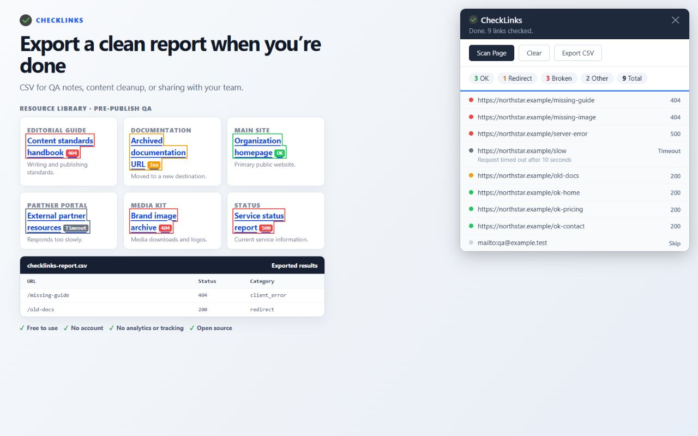

Documentation QA · CheckLinks guide
Broken-Link Checking for Documentation Teams
Short answer: Treat each published documentation page as a QA unit: scan it with CheckLinks, filter the results, jump to the source link, assign the finding in your normal team tracker, fix it, re-scan, and export the evidence. This keeps link defects actionable without pretending the extension is a shared documentation workspace.
Short demonstration: check one documentation page
- Choose the QA unit and owner. Put one rendered documentation page, its version or release, and its reviewer in the ticket. Include pages changed in the release plus shared navigation and high-use entry pages. Open the public or staging version in Chrome and click the CheckLinks icon.
- Filter by the kind of decision needed. Use Broken for a deprecated API endpoint returning 404 or a retired PDF returning 410/404. Use Redirect to identify links that still work through a moved route. Use Other for timeouts, network errors, skipped anchors, and non-HTTP links that need a human decision.
- Jump to the documentation context. Click a result in the panel to scroll to the matching anchor. Read the code sample, explanation, and version note around it. Decide whether to update the link, replace a retired PDF with its current guide, add a deprecation note, or remove a reference that should no longer be published.
- Assign outside CheckLinks. Copy the URL, category, and source-page context into the team's issue tracker or release board and assign an owner there. CheckLinks keeps scan results in the current tab; it does not persist findings, route them to teammates, or manage status transitions.
- Re-scan the exact page and export. After the documentation change is rendered, run a new scan and confirm the result is resolved or intentionally accepted. Export CSV for the ticket. The report gives the team a compact record of URL, status, category, status text, and followed redirect target.

Make the report useful to the next person
Keep the page URL, documentation version, scan date, and owner beside the CSV. Record why an intentional redirect or skipped link is accepted. For a deprecated endpoint, capture the replacement version or migration note; for a retired PDF, capture the current document's stable landing page rather than silently swapping in a guessed file.
Run the same small set of page units after navigation, API-reference, or asset-publishing changes. That gives editors and engineers a clear re-scan boundary without requiring every contributor to understand the extension's implementation.
Give the next page a focused check
Keep the rendered page and the QA conversation in view while you triage.
Install CheckLinks from the Chrome Web Store